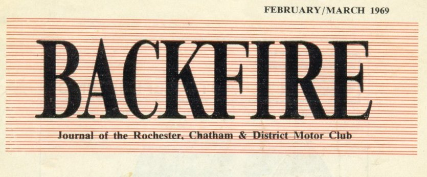
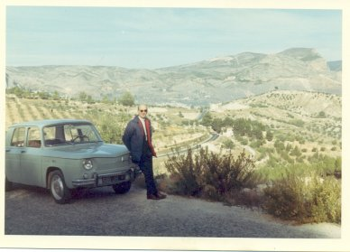
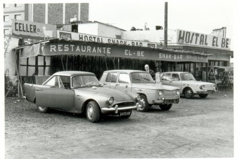
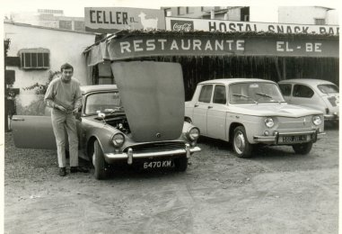
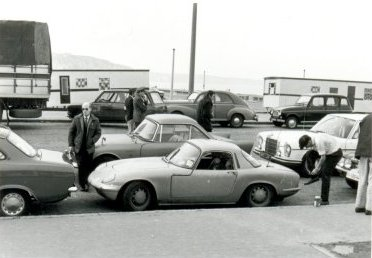
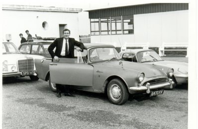

OPERATION X
An account of a diversion from normal work for Ralph Thomas and Tony
Pink

Tony's sister Val had taken a job in Benidorm, Southern Spain, as a courier
for the summer of '68. To save the fare she had driven her Sunbeam Alpine
down through France and continued to use it through the summer. She
meanwhile found a winter job in Majorca and so would not be returning to
this country. Meanwhile it had been discovered that the Spanish have a law
where a foreign car may only be kept in Spain for up to six
months-thereafter duty must be paid; if not they are entitled to confiscate
the car and fine you. A quick count up was made in October and the car was
found to be "hot".
Flying into Spain would give away the fact that the car was not driven in
by that person, and so a clever scheme was devised whereby Tony and RWST
would fly Heathrow / Orly / Perpignon, rent a self drive car and enter
Spain just South of Perpignon apparently as day trippers and motor down to
Benidorm. Then after a reasonable amount of kip, return separately which
would avoid RWST becoming involved in any crime, other than aiding and
abetting, then driving the Alpine through France and home. That was the
plan anyway. It was hatched on Monday, October 28th and we would go if
possible on Wednesday, to return by Sunday following. Two single fares were
booked, Caravelle to Paris, where we caught a connecting flight (Viscount
with mad French pilot) to Perpignon, a notorious airport sited in the
mountainous area near the Spanish border. It was planned to cross the
border immediately to obtain Wednesday's stamp in the passport. (The French
at Paris and Perpignon had completely ignored us.) Fortunately we had
booked a Hertz car, Renault 1100 in Ralphs name before leaving London. On
arrival everyone rapidly dispersed and the airport shut.-No customs -nowt!
Luckily a fellow and his female companion turned out to be Hertz people and
were expecting us. Just as well; it was a ghost town otherwise. Between us
we had only Ralph's £50 allowance (There was a currency
restriction in those days) plus pocket money and Hertz required
£43 cash as a desposit on the ruddy car. (a brand new one, not
even run in!) By digging down we left an envelope of assorted currencies
totalling that amount and left hurriedly for the frontier a little after
ten.
We arrived there to be thoroughly inspected by the Spanish wallahs. Just as
the No. 1 hombre was climbing in the back of the car looking for smuggled
goodies, etc., the complete frontier town was plunged into darkness -power
failure. No. 2 hombre had a parafin auxiliary lamp available and he hastily
lit same, but power was restored and so blew it out, where- upon the fuses
must have blown again, and he was required to re- light it. This happened
three times and amid much short-tempered hand waving and other gestures, we
concluded that he wished us to pass as friends. We offered all documents,
green cards, etc., but received a curt Spanish phrase which must have meant
"something or other" off! We did not therefore obtain evidence of entry
into the country on that date. A bitter blow! At this point it would be a
good idea to expose as a lie the fact that everyone spoke English. Not a
soul could communicate with us since the little Air France filly at
Heathrow had wished us bon voyage. Ralph, a wise and staunch friend,
advised that night driving seemed straightforward and suggested that we
pushed on for a few hours to try and make Barcelona some 293 kms away. He
would drive until whacked and then hand over to me after having had a
couple of hours shut-eye. After 200 kms. Ralph said "I'm tired, can you
take it?" We changed places and had a quick swig of coffee from a flask we
had filled at the frontier (goat's milk, I believe).
After changing over and I became accustomed to the left-hand drive and
funny Renault gear stick, etc. (a very nippy little motor, by the way), we
soon found ourselves proceeding the wrong way up a one-way street,
approaching a junction on the wrong side of the road heading the wrong way
for Valencia. At the time we did not know this, but we had the good fortune
to meet a Spanish police chappie who pointed all this out to us. First in
Spanish, then in pidgin French. All in all he was very decent to us and we
wished him well and continued, more or less still lost, as we didn't
understand his advice too well, but after a while we struck N47 route which
we wanted.
A little way out of Barcelona (we had been round and round three times as
Ralph is such a poor navigator) Ralph dropped off to sleep. The confidence
of the man! Two driver changes later we approached Valencia at about 6.30
a.m. on Thursday, I was struck by the picturesque sight of the sea lapping
at the roadside under a sea mist. It was excactly like the painting for
sale in Boots at Chatham. I resisted the temptation to wake Ralph. I
reasoned he may not wake so good. Well, who does, after all, so I let him
sleep and pressed on through a crowd of workers on assorted transport. The
traffic lights there are switched to neutral at night and all cross roads,
even of eight-lane magnitude, are one big free-for-all. I spotted a sign
indicating "Alicante",133 kms, our destination, down the left-hand road and
shot off in that direction. Soon after Ralph awoke and we changed about
again and I set about studying the maps. Soon the road deteriorated into a
rural type instead of the hitherto excellent straight, almost motorway on
which we had made such good time. It would appear that Tony had fluffed and
taken a road inland of the mountain range which ran all the way down the
coast. Being very experienced (one of Ralph's former navigators), I
pronounced that there wouldn't be a lot in it and that rather than turn
back we should press on and take one of about five roads which connect with
the good old N 47.

It really was old Spain back there, people on donkeys-the lot. By
mid-morning we had reached a place called Alcoy, a main junction on this
road from which we struck out over the mountains, Ralph still driving. We
went up and up and up, through cloud into brilliant sunlight, which rather
hurt after our hectic previous day's work and the ensuing journey. We also
stopped for a call of nature and to remove our coats and ties, as it was
noticeably warmer than in England. It took five hours to complete that last
leg, whistling round hairpins the like of which you cannot imagine with
good old Ralph at the wheel fancying that he was partaking in some
international rally. I sweated and tried to persuade him, without success,
to slow a little, as we didn't have to make it before lunch.
In that time we met only four other vehicles coming the other way,
fortunately at points where we could see them coming. We arrived in
Benidorm at about 1 p.m. Valerie was aware that we had left on Wednesday
night but had not expected us until dinner that night at the earliest. When
we said we had come from over the outback, via Alcoy, she was even more
amazed at the time we made, which was gratifying to us in our tired
state.
We were told that most people coming by road for the first time took the
first turning out of Valencia as sign posted, and that the second was
best, continuing on that coast road, and only taking about an hour. Pity we
weren't forewarned. Nevertheless, we had a shave and cup of coffee, went
down town to a decent hotel, The Agir, booked a room, ordered lunch to be
sent up to the room and took a shower. It was really hot by this time and
Ralph decided that it would not suit him for a holiday in August if this
was how it was in Novemberabout 75'-80' I should think. We ate our
sandwich lunch and drank our Martini's and fell asleep until 6.30. Ralph,
being a food connoisseur, had specified a Paella for supper, so Valerie
took us way out of town to a little place where Mumma, Pappa and off-spring
all attended us to take our order for dinner and drinks. We all had paella
and red wine, a pleasant local brew at 10 pesetas a bottle (1/2d.). After
this we bade them good bye, as Ralph wanted to make tracks for home.
At this point we drove separate cars, Ralph the Renault, and I the Alpine.
It felt lonely watching Ralph's rear lights for mile after mile, so from
time to time I would nip into the lead. Sure enough the coast road back to
Valencia was much more straightforward. There were a lot of heavy lorries
on the roads all the time, but we both remarked on their excellent
discipline of not overtaking willy-nilly, but inviting the driver behind to
do so when safe by showing an "Extra Stop Light"-Green. Just outside
Valencia the Alpine had a fit of petrol starvation and I had to flash madly
for Ralph to hang on. I could find nothing wrong and on restarting the car
went O.K. and so we pressed on. I forgot to mention that my sister-and
anyone who has a sister will know that they are like this-handed the car
over to us with only half the exhaust system attached, no oil pressure
showing on the clock, and the engine giving out a devil of a din. (We found
on our return to the U.K. that the timing chain was in tatters.) With the
cab full of fumes I had to try and keep fresh air circulating through the
car, so I was suffering a mixture of coldness and fume stench. A little
farther on we pulled in for a coffee and bought some grapes, which we found
ideal for nibbling at whilst driving along at a hairy 85 m.p.h. in a sick
car. At this cafe were two Spanish sailors, apparently named Dick and Jack.
Dick spoke English of a sort, and had been teaching Jack. They asked if we
were going to Barcelona. What could we say. The road, which had been built
for tourists to the Costa Brava and Costa Blanca, only went to Barcelona.
So we took them aboard, for company I thought, as much as anything. I took
Jack and Dick went with Ralph. I don't know how he got on, but I managed to
count una, dos, tres, etc., up to 12 and learn various snippets of Spanish
by the time we had arrived at Barcelona, when I was more overcome by the
smell of garlic than by the fumes. Fortunately for us they wished to be
transported to the other side of town, which provided us with expert
navigators through the town which had confused me so on the way out.
 By this
time it was 7 a.m. on Friday, a public holiday, we were told. We pressed
on without a stop until 8.15 a.m. at the last seaside place before the
road went inland to the frontier where we pulled into an
attractive-looking sea food restaurant for brekkers. We continued to the
town prior to the frontier, where we again stopped to have coffee and
make preparations to go over singly.
 We turned out
the contents of our pockets and the loose stuff in the cars so that we
were not smoking the same fags and that there was nothing on me to
associate me with Ralph; or vice versa. Then I left for the frontier.
 
There were short queues of day trippers obviously going into France and I
pulled in behind the shortest.
It was rather like the approach to Dartford Tunnel. The customs man rattled them
through in no time, and I was next in an English outlawed Alpine, which
for all we knew was posted on every police notice board in the country.
He didn't look at me properly but just waved me on. I had my passport,
etc., in my hand and held it aloft, which made him reply with an even
more vigorous wave through. Trying my hardest not to hurry, I slipped
into gear and tootled up to the French frontier some 200 yards on, where
they were a little more interested and looked at my passport, returned it
through the window and waved me into sweet France. A lovely feeling, as
it had been at the back of my mind all through the trip that I should at
that point be smartly whisked into the local calaboose. I then found a
spot to park and noticed that I could exchange my pesetas for francs.
Here another word of warning to the unwary. Just inside this frontier
there are the money touts, and their rate of exchange turned out to be
25% short of the recognised rates. Being tired and converting pesetas to
francs, rather than sterling, I got caught which rather sickened me to
say the least, especially as we were a bit short as it was. Ralph seemed
to be an age coming through. I imagined him being given the once-over,
but after some minutes he rolled up. Flabbergasted by the lack of
ceremony, just as I was. Without messing about we pressed on again to try
and make Perpignon by mid-day, since the garage who ran the Hertz Agency
would be shutting till 3.0 for lunch. We just made it and retrieved our
£43 desposit, coughed up the fee and made for the station where
Ralph suggested, again wisely, that we try to put the Alpine on a Train
to Paris.
Still no English speeking geezers, but with a little perseverence we
established that this couldn't be done after September 30th. From there we
went to Narbonne station without success again being told, still in French,
that there was a nightly service from Toulouse to Paris but it had to be
booked by 5.30 to catch the 9.30 train. Having thought about what the chap
had patiently explained to us we set off again, against the clock, to try
and make Toulouse by 5.30.
A few miles out of town the engine went phrrrrrrr...ahem an!! stopped
dead Words came forth and we both leaped out and under the bonnet. The
throttle linkage had disengaged itself and had fallen to the closed
position. Relief. Ralph's deft fingers soon put it all back in place and
we set off once again at a great lick. We were warned not to belt the
poor old thing, but it seemed much happier on the French petrol and it
was doing nearly the ton steadily all the way, where conditions allowed.
En route we discussed the possibility of the fare being more than we had
with us, and if we parted with all we had could we get credit, or pay for
the boat fare by cheque on arrival in England, etc., etc., nothing but
worries all the way. We located Toulouse station fairly quickly only to
find the forecourt jammed full with cars. It took somewhile to convince
the man at desk No. 7 that the car was to go that night. They apparently
reserve these things well in advance. I then had a brainwave. I asked if
anyone spoke English, and for the first time on the trip a clerk at the
back of the office came forward who spoke in near perfect English and he
soon arranged an extra truck for the end of the train to take the car. He
issued a ticket for the car 32frcs, kindly unlocked his petty cash and
changed three £5 notes and some pesetas for Francs. Then we were
met by what must have been the village idiot of Toulouse. As Ralph
flatteringly pointed out my school must have worked hard on me, for I had
made myself understood in every situation up until now. There was some
infernal block between us, the car and the train, which presumably this
chap had the responsibility for loading the cars. It turned out that I
had bought a car ticket only, and we still needed tickets for
ourselves-another 80 Francs each. We were just able to muster it and
coughed up once again. Leaving the car to the gods we went into a
convenient loo and shaved off 36 hours growth by removing the light bulb
and pushing in two hair grips. We had about 70 Francs left and blew 45 of
them on a superb meal in the station hotel.
We got on the train, not really caring whether the car was aft or not,
and speculated on our chances of a couple of birds to share the couchette
with. To our complete surprise there were two 18/20 year old students
busily disrobing in the most cunning way on the top bunks. As the train
left, dead on time, we slipped into the compartment and clambered into
our own designated spots. The ticket inspector came round at that moment
and clipped our tickets slamming the door to as he went, to which Ralph
called out "Good night to you too!" This brought a snigger from above.
Ralph then went on to mutter away about birds and chances, etc, at which
I felt a little embarrassed and pretended that I was not with him. We
both fell straight off to sleep, not to awake again till 6.15, just five
minutes out of Paris, the same tactless inspector bashing on all the
doors to get people up.
We left the train and started to search for the car and was told Quay 57.
This meant nothing to anyone, but our travelling companion, Mademoiselle
Fifi, spotted us and asked if we were looking for our car, in perfect
English! She then directed us to the rear of the station where sure
enough it stood all alone in a large yard. Wonderful organisation we
thought, - bet B.R. couldn't match it. Next stop Dieppe. We set off again
refreshed by the sleep and weaved round and round the centre of Paris. We
concluded this was no good and that we should stop and ask the way, and
by sheer chance, at this point, the car again went Phurrrrr. . .ahem,
right outside a cafe, so in our accustomed by now blase manner, we pushed
it into the kerb and entered the cafe for brekkers. We enquired about the
route to Dieppe and was given a complete low down on the layout of Paris
complete with all places of interest, together with, most valuable, a
route card similar to the type supplied by the AA, except the proprietor
wrote this out himself. After several anxious circuits of the Arc de
Triumph we struck off at a tangent for Dieppe and made it by 11.15. The
boat was boarded by 12.15 and we managed to find sufficient dough to pay
for everything, relaxed on the boat till 4.30 staggered the customs with
our story and took the wrong turning out of Newhaven unnoticed.
A smart turn around, a quick beer and indoors by 7.30--2,000 miles odd in
72 hours. Observations-The trip is nothing to be feared for
holiday-makers contemplating such a trip to the Costa Brava, for
instance. The roads over there we found generally good, especially that
N.47, down the length of Spain, and in France although the surface was
not up to much the roads were generally straight and fast with few danger
spots. Their petrol is not as good as ours. The Spanish is really bad,
sort of one up from derv; and if you have to go over the mountains, don't
go with Ralph.
TONY (call me 008) PINK.